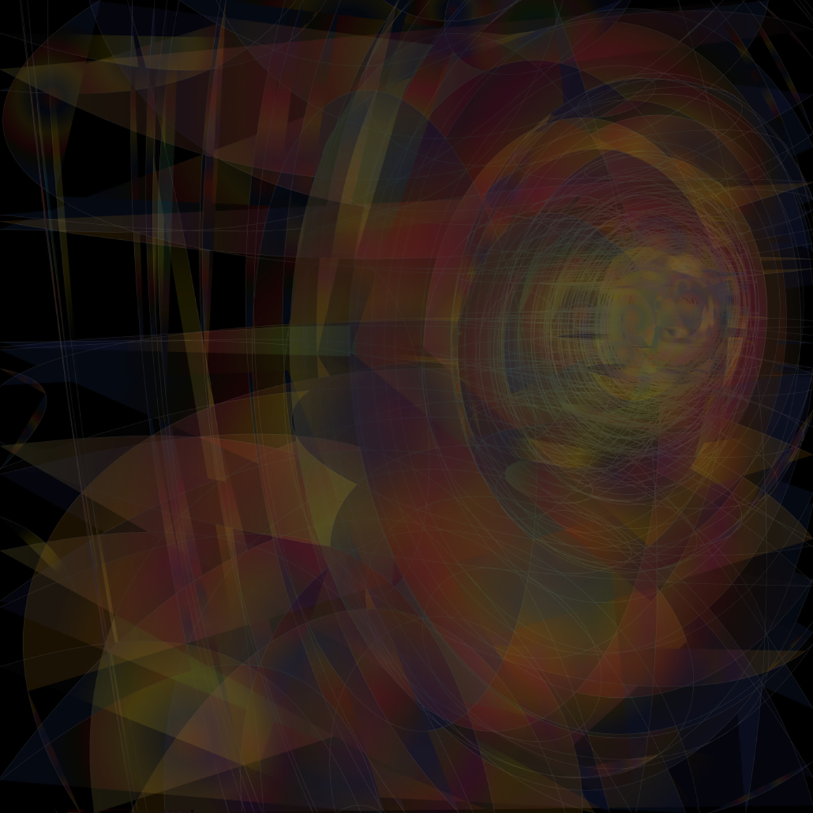
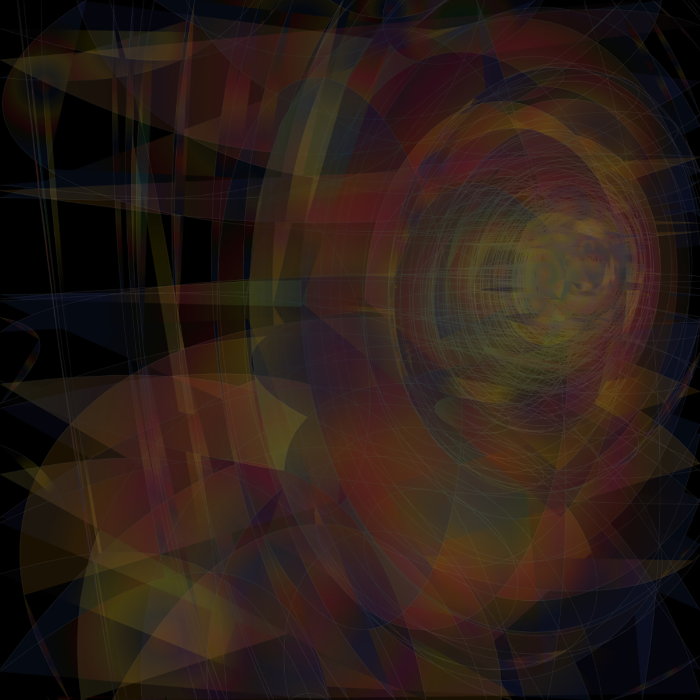
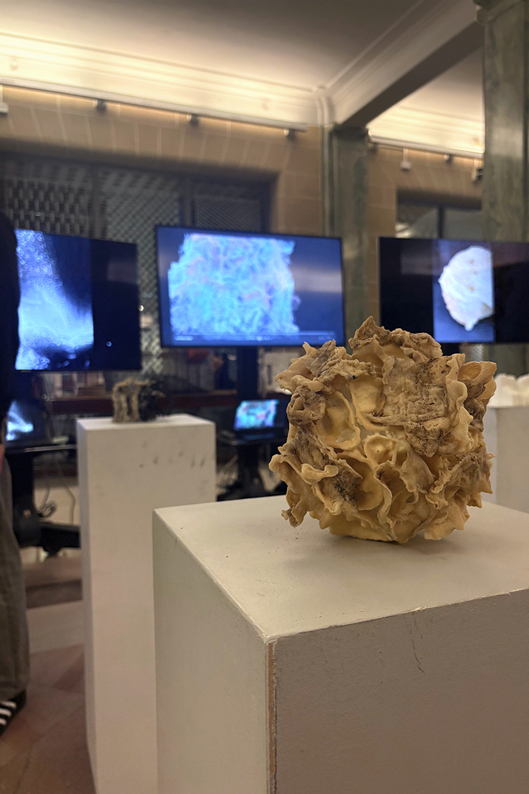
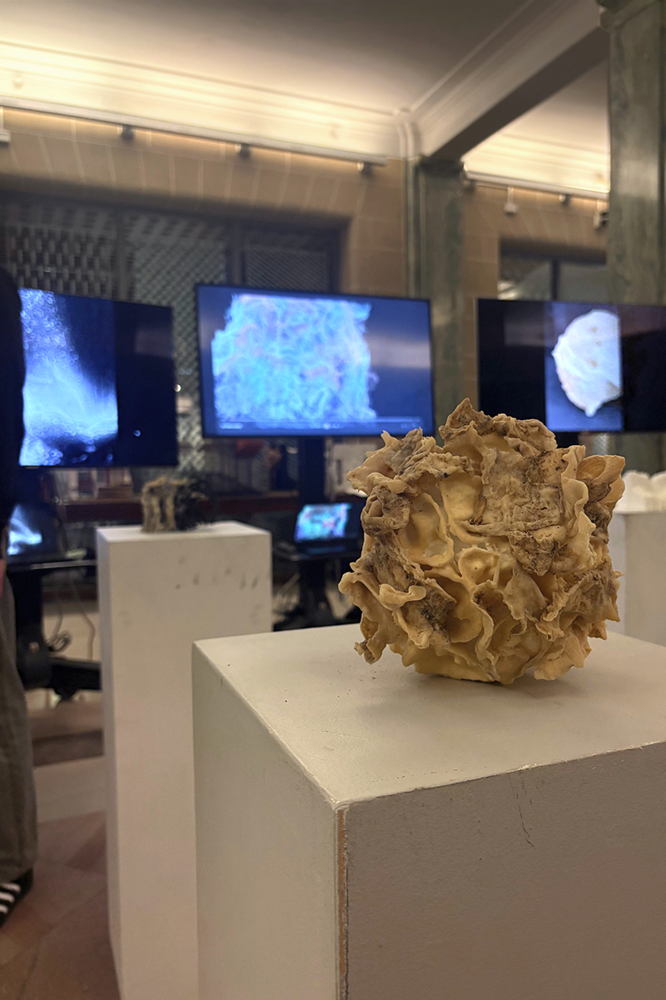

Students work with collective gardens to design communal housing projects of eighty units each. They use the lens of the house and garden to explore, challenge, and articulate relationships between human and nature, building and landscape, interior and exterior. They ask: what does it mean for housing and nature to be intertwined? For landscape and the interior to co-mingle? What new models of domesticity will this generate?
The garden is a figure to chart alternative forms of living. Gardens come in many forms: herbal and medicinal gardens, community and private gardens, green facades and roofs, winter gardens, rain gardens. They can be aesthetic cultural artifacts or productive agricultural plots, interior collections of exotic houseplants or wild zones of nonhuman life. The plants filling the vacant spaces between our roads, homes, and businesses. Gardens require tending or care or otherwise connect us to the nonhuman world, suggesting a blurred boundary between human and nature.
We focus our study on a long, narrow block in Syracuse, New York, above the site of the former Erie Canal. We consider the home as a multi-species assemblage, with plants and animals as both our neighbors and the co-inhibitors of our houses. Increasingly, biologists and ecologists show that life requires interplay and entanglements among many kinds and species. Instead of subordinating nature to the authority and desires of human occupants, we study plants, animals, fungi, and bacteria as our companions in domesticity. Designing homes and gardens requires understanding the overlaps between multiple types of care—tending to botanical cycles, human routines, and material durability—and how these practices produce alternative ways of living.
 



 
